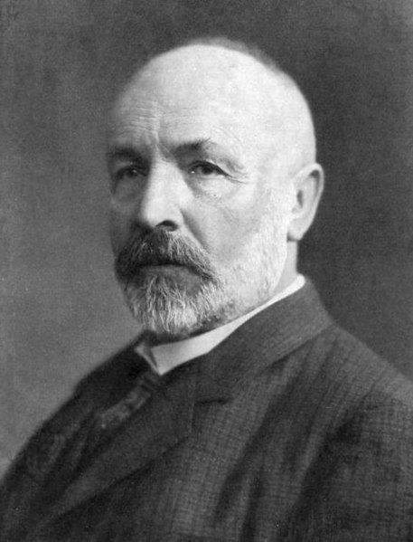
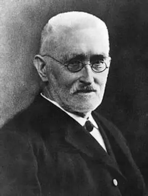

数列极限定义: \( \forall\varepsilon>0,\exists N\in\mathbb{N},\forall n>N,|x_n-a|<\varepsilon \)
函数极限定义: \( \forall\varepsilon>0,\exists\delta>0,\forall x,0<<|x-x_0|<\delta,|f(x)-A|<\varepsilon \)
导数定义: \( f'(x_0)=\lim_{\Delta x\to0}\frac{f(x_0+\Delta x)-f(x_0)}{\Delta x} \)
微分中值定理: \( f(b)-f(a)=f'(\xi)(b-a),\xi\in(a,b) \)
泰勒公式: \( f(x)=\sum_{k=0}^n\frac{f^{(k)}(x_0)}{k!}(x-x_0)^k+R_n(x) \)
定积分定义: \( \int_a^b f(x)dx=\lim_{\lambda\to0}\sum_{i=1}^n f(\xi_i)\Delta x_i \)
牛顿-莱布尼茨公式: \( \int_a^b f(x)dx=F(b)-F(a),F'=f \)
格林公式: \( \oint_L Pdx+Qdy=\iint_D \left(\frac{\partial Q}{\partial x}-\frac{\partial P}{\partial y}\right)dxdy \)
高斯公式: \( \mathop{\iint}\limits_{\varSigma} Pdydz+Qdzdx+Rdxdy=\iiint_{\varOmega} \left(\frac{\partial P}{\partial x}+\frac{\partial Q}{\partial y}+\frac{\partial R}{\partial z}\right)dxdydz \)
级数收敛: \( \sum_{n=1}^\infty u_n=S\Leftrightarrow\lim_{n\to\infty}S_n=S \)
傅里叶级数: \( f(x)=\frac{a_0}{2}+\sum_{n=1}^\infty(a_n\cos nx+b_n\sin nx) \)
一致收敛: \( \forall\varepsilon>0,\exists N\in\mathbb{N},\forall n>N,\forall x\in I,|S_n(x)-S(x)|<\varepsilon \)
← 返回主页
数学分析
“你们看见那个瘦小的年轻人吗？他将取代我们大家。”
——Joseph-Louis Lagrange
Mathematical Analysis · 数学分析
数学分析学，也称分析数学、分析学或解析学（英语：Mathematical Analysis），是普遍存在于大学数学专业的一门基础课程。
大致与非数学专业学生所学的高等数学课程内容相近，但内容更加深入，一般指以微积分学、无穷级数和解析函数等的一般理论为主要内容，并包括它们的理论基础的一个较为完整的数学学科。
数学分析研究的内容包括实数、复数、实函数及复变函数。数学分析是由微积分演进而来，在微积分发展至现代阶段中，从应用中的方法总结升华为一类综合性分析方法，且初等微积分中也包括许多数学分析的基础概念及技巧，可以认为这些应用方法是高等微积分生成的前提。数学分析的方式和其几何有关，不过只要任一数学空间有定义邻域（拓扑空间）或是有针对两对象距离的定义（度量空间），就可以用数学分析的方式进行分析。
学院指定的教材是：《数学分析教程》 常庚哲 史济怀 著
推荐的教材是：
《数学分析教程》 常庚哲 史济怀 著
《数学分析新讲》 张筑生 著
《数学分析习题课讲义》 谢惠民 著
《Principles of Mathematical Analysis》 Walter Rudin 著
清华大学于品数学分析讲义 于品 著
当然除了本页面展示的教材之外，还有许多数学分析的经典教材值得一看，例如卓里奇，中科大程艺老师的数学分析，复旦大学的陈纪修老师的数学分析等，由于展示太多教材并无太大意义，若有兴趣同学可以自行搜索相关资源
在大连理工大学，该课程的任课教师是 程明松 副教授，钱晓元 教授（数学分析拓展 盘锦校区）课程分为三个学期讲授，重点涵盖极限理论、单变量微积分、多变量微积分、级数理论等核心内容，注重逻辑推理与严格证明。
教师主页：https://faculty.dlut.edu.cn/mscheng/zh_CN/index.htm（程明松）https://faculty.dlut.edu.cn/qianxiaoyuan/zh_CN/index.htm（钱晓元）
中科大史济怀数学分析教程录播课（bilibili）：https://www.bilibili.com/video/BV1SP411D7WE
中科大少年班数学分析B1课程录播课（bilibili）：https://www.bilibili.com/video/BV1Nr4y1U7qC
USTCguide：https://ustcguide-vuepress.vercel.app/coursedata/au52p8bq/
大连理工大学钱晓元教授的数学分析录播课（bilibili）：https://www.bilibili.com/video/BV1XK4y1x7N5/
难度：较难 给分：中等
📚 参考书目
入门教材
中国科学技术大学 史济怀
中国科学技术大学 徐森林
苏州大学 谢惠民
北京大学 陈天权
北京大学 张筑生
拓展教材（学无止境）
🚀 学习笔记
📝 历年试卷
中国科学技术大学数学课程试卷：https://ustcmathexam.github.io/Services/
📜 数学分析发展沿革
17世纪
牛顿 (Isaac Newton) / 莱布尼茨 (Gottfried Leibniz)
分别独立创立微积分，奠定数学分析的基础。牛顿从运动学角度提出“流数术”，莱布尼茨从几何学角度建立微分和积分符号体系，两人的工作共同开启了分析学的新纪元。
18世纪
欧拉 (Leonhard Euler) / 拉格朗日 (Joseph-Louis Lagrange)
欧拉系统发展了微积分的应用，创立了变分法；拉格朗日完善了微积分的理论体系，将分析学从几何直观转向代数化，其《分析力学》成为分析学应用的典范。
19世纪初
柯西 (Augustin-Louis Cauchy)
首次给出极限、连续性、导数、积分的严格定义，建立了柯西收敛准则，将微积分建立在严格的极限理论基础上，标志着数学分析严格化的开端。
19世纪中期
魏尔斯特拉斯 (Karl Weierstrass) / 黎曼 (Bernhard Riemann)
魏尔斯特拉斯提出ε-δ语言，完善了极限理论的严格表述；黎曼扩展了积分概念，建立黎曼积分理论，同时黎曼函数的研究推动了实变函数论的发展。
19世纪后期
康托尔 (Georg Cantor) / 戴德金 (Richard Dedekind)
康托尔创立集合论，为数学分析提供了坚实的理论基础；戴德金通过分割理论严格定义实数，完善了实数系的构造，解决了分析学的基础危机。


20世纪
勒贝格 (Henri Lebesgue) / 希尔伯特 (David Hilbert)
勒贝格建立测度论和勒贝格积分，扩展了积分理论的适用范围；希尔伯特的泛函分析理论将分析学推向抽象化、公理化，形成现代数学分析的完整体系。
“人们走了，但他们的功绩留下了。”——Augustin-Louis Cauchy
💬 留下你的评论